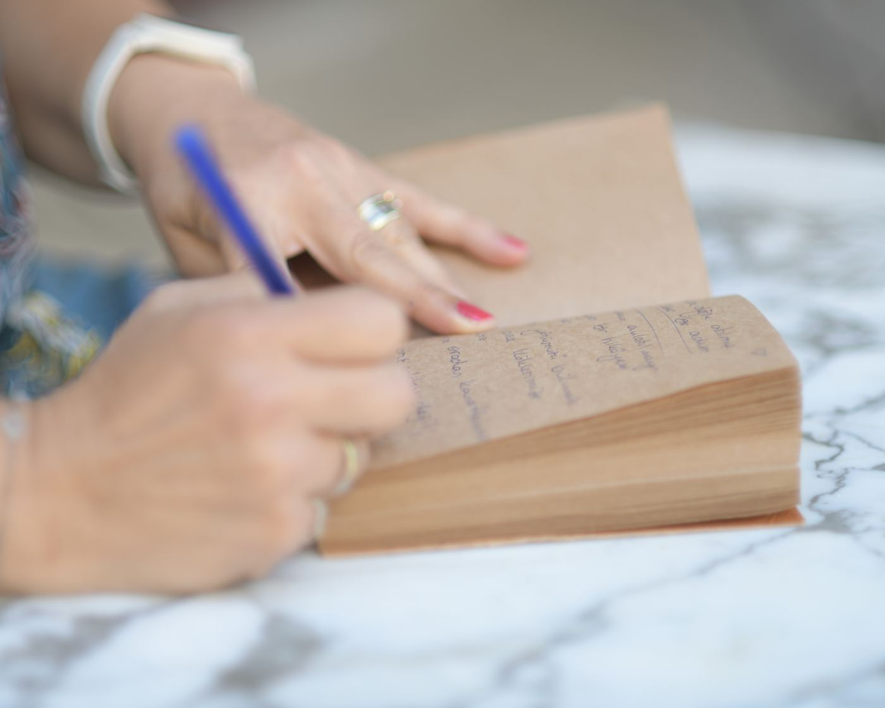
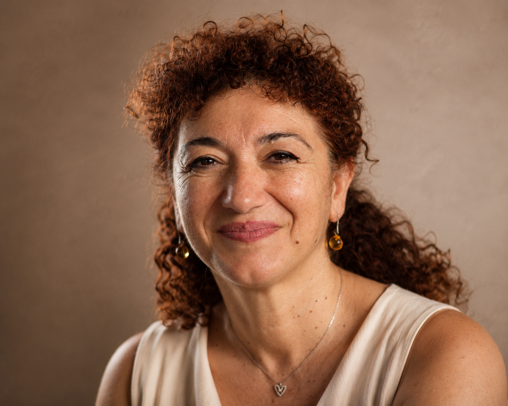
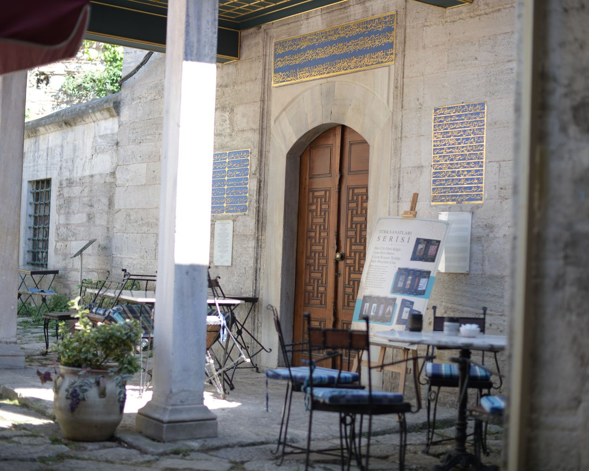
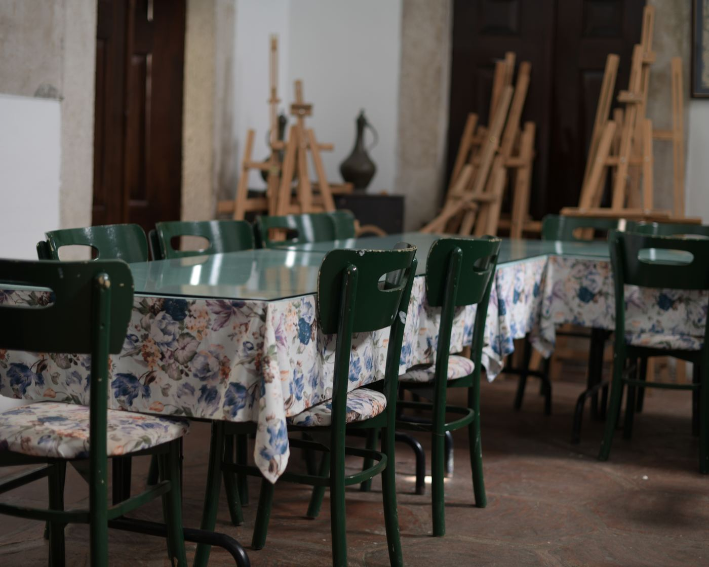

Altı Haftalık Rehberli Atölye · İstanbul
Köklerinizi bilmeden
kanat açılmaz.
Hayatın bir bölümünü kapatıp yenisini açarken, bu geçişe zaman ve dikkat ayırmak için tasarlanmış, altı buluşmalık bir öz-yansıma atölyesi.
IGiriş
Bazı bölümler sessizce biter. Onlara doğru bir veda söylemeden, yenisine başlamak zorlaşır.
Kök & Kanat bir terapi programı değildir. Kariyer değişimi, emeklilik, taşınma ya da hayatın herhangi bir kapanış anı yaşayan yetişkinler için tasarlanmış, rehberli bir eğitim ve öz-yansıma deneyimidir.
Altı hafta boyunca, küçük bir grupla birlikte; geride bıraktıklarınızı adlandırmak, bugün durduğunuz yeri anlamak ve önünüzdeki bölüme daha berrak bir zihinle adım atmak için zaman ayırırsınız.

IIAtölye Yolculuğu
Altı buluşma, tek bir geçiş
-
I
Duraklama
Gruba ve sürece varış. Hızını kesmek ve gerçekten durmak için ilk adım.
-
II
Kökler
Bugüne kadar sizi taşıyan hikâyeleri, alışkanlıkları ve değerleri fark etmek.
-
III
Bırakma
Taşımaya devam ettiğiniz ve artık bırakabileceğiniz şeyleri ayırt etmek.
-
IV
Boncuk Ritüeli İmza Uygulama
Grubun kalbindeki an: her katılımcı, bıraktığı ya da yanında taşımaya karar verdiği bir anıyı elle dizdiği bir boncuğa dönüştürür.
-
V
Boşluk
Henüz adı konmamış olanla, belirsizlikle oturmayı öğrenmek.
-
VI
Kanat
Yeni bölüme, elinizdekilerle ve daha hafif bir yükle adım atmak.

Eğitim Bilimci & Kök & Kanat'ın Kurucusu
IIIRehberiniz
Yasemin Hanım
Eğitim Bilimci & Kök & Kanat'ın Kurucusu
Yıllarını yetişkin eğitimine ve öğrenme süreçlerine adayan Yasemin Hanım, kendi hayatındaki köklü bir geçişin ardından fark etti: insanların çoğu, bir bölümü kapatmadan diğerine geçmeye çalışıyor.
Kök & Kanat, onun eğitim bilimindeki birikimini kendi deneyimiyle birleştirerek kurduğu, küçük gruplarla yürütülen samimi bir alan.
IVDetaylar
Tarih
20 Eylül 2026'da başlıyor · 6 hafta, haftada bir buluşma
Yer
Caferağa Medresesi, İstanbul
Grup
8–12 katılımcı ile sınırlı, samimi bir grup
Katılım Bedeli
9.800 ₺


VSık Sorulan Sorular
Bu bir terapi mi?
Hayır. Kök & Kanat; eğitim temelli, rehberli ve yapılandırılmış bir öz-yansıma atölyesidir. Katılımcıların yaşam hikâyelerine farklı bir gözle bakmalarını destekler. Terapi veya klinik bir müdahale değildir.
Nasıl katılabilirim?
WhatsApp üzerinden bize yazmanız yeterlidir. Kısa bir ön görüşmenin ardından atölye hakkında sizi bilgilendiriyor, kontenjan durumunu birlikte değerlendiriyor ve kayıt sürecini birlikte tamamlıyoruz.
Grup neden küçük tutuluyor?
Kök & Kanat'ta her katılımcının kendini rahat ifade edebilmesi, duyulabilmesi ve güvenli bir paylaşım ortamı oluşabilmesi için gruplar 8–12 kişiyle sınırlandırılır. Böylece herkes yolculuğun aktif bir parçası olabilir.
Ödeme ve iptal koşulları nasıl?
Kayıt, ön ödeme ile kesinleşir. Kalan ödeme planı ve iptal koşulları kayıt öncesinde sizinle şeffaf şekilde paylaşılır. Böylece sürece başlamadan önce tüm detayları net olarak bilirsiniz.
Kök & Kanat tam olarak nedir?
Kök & Kanat; yaşam hikâyene farklı bir gözle bakmanı sağlayan, eğitim temelli ve rehberli bir öz-yansıma atölyesidir.
Kimler katılabilir?
Kendini daha iyi tanımak, hayatındaki dönüm noktalarını anlamlandırmak ve yeni bir bakış açısı kazanmak isteyen yetişkinler katılabilir.
Daha önce böyle bir çalışmaya katılmadım. Uygun olur mu?
Evet. Atölyeye katılmak için herhangi bir ön bilgi veya deneyim gerekmez.
Gizlilik nasıl sağlanıyor?
Grubun temel ilkelerinden biri gizliliktir. Katılımcılar paylaşılan kişisel bilgilerin grup dışında paylaşılmaması konusunda ortak bir ilke benimser.
Her hafta gelmek zorunda mıyım?
Atölye bir bütün olarak tasarlanmıştır. En yüksek faydayı sağlayabilmek için tüm buluşmalara katılman önerilir.
İptal edebilir miyim?
İptal ve iade koşulları kayıt öncesinde ayrıntılı olarak paylaşılır.
Herkesin önünde hayat hikâyemi anlatmak zorunda mıyım?
Hayır. Paylaşımın sınırlarını her zaman sen belirlersin. Kendini hazır hissettiğin kadarını paylaşman yeterlidir.
Bu atölyeden nasıl bir kazanımla ayrılacağım?
Her katılımcının yolculuğu farklıdır. Ama çoğu kişi; kendini daha iyi tanıma, yaşamındaki önemli dönüm noktalarını fark etme ve geleceğe daha net bir bakışla ilerleme duygusuyla ayrılır.
20 Eylül'de başlıyoruz.
Yer sınırlı. Sorularınızla ya da doğrudan katılım için Yasemin Hanım'a yazın.
WhatsApp'tan Yazın